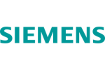

Naprawiamy zmywarki Siemens w Policach i okolicach. Diagnoza usterek, szybka naprawa i gwarancja jakości.
Zamów Naprawę
Techniczna analiza konkretnych usterek i wyzwań dla marki Siemens. W zmywarkach marki Siemens, awarie kodu E15 są często spowodowane aktywacją czujnika zalania w misie, co może być spowodowane uszkodzeniem lub zużyciem uszczelki pompy. Innym powodem mogą być zanieczyszczenia wewnątrz zmywarki, które mogą powodować nieprawidłowe działanie pompy. W przypadku kodu E09, awaria pompy myjącej z grzałką jest najczęstszą przyczyną awarii.
Uszkodzenie lub zużycie pompy może być spowodowane przez nieprawidłowe użytkowanie lub brak regularnych czyszczeń. W obu przypadkach, diagnoza i naprawa wymagają doświadczenia i specjalistycznych narzędzi, dlatego ważne jest, aby zlecenie naprawy zmywarki marki Siemens powierzyć doświadczonemu serwisantowi. Logistyka dojazdu serwisu w mieście Police. W mieście Police, nasz serwis oferuje szybkie i efektywne rozwiązania dla klientów posiadających zmywarki marki Siemens. Nasz zespół serwisowy jest dostępny w ciągu 24 godzin od momentu zgłoszenia awarii, a czas reakcji nie przekracza 2 godzin.
Nasz serwis oferuje także możliwość umówienia wizyty w domu klienta, co pozwala na szybkie i komfortowe rozwiązanie problemu. Nasz serwis jest również w stanie dostarczyć zamienne części zmywarki marki Siemens, co pozwala na szybkie i efektywne naprawienie awarii. Praktyczna porada diagnostyczna do wykonania przed przyjazdem fachowca. Jeśli Twoja zmywarka marki Siemens wyświetla kod E15 lub E09, nie wahaj się skontaktować się z naszym serwisem pod numerem 721 988 949, z nami. Przed przyjazdem fachowca, możesz przeprowadzić prostą diagnozę, aby pomóc nam lepiej zrozumieć problem.